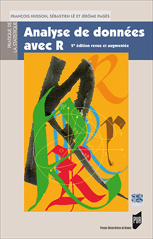

Site F. Husson 
IntroductionAnalyse en Composantes PrincipalesAnalyse des correspondances Analyse des correspondances multiples ClassificationAnalyse Factorielle MultiplePour conclureForum
Lors d'une étude consommateur sur les préférences de crèmes au chocolat, on a demandé à 86 consommateurs d'évaluer 9 crèmes au chocolat en mettant des notes entre 0 (la crème n'est pas appréciée) à 10 (la crème est très appréciée).
Le tableau de données croise en lignes les consommateurs, en colonnes les 9 crèmes et dans une case la note attribuée par le consommateur i pour la crème k. Pour que les différences d'utilisation de l'échelle de notation des consommateurs ne jouent pas un rôle déterminant dans l'analyse, on a centré les données par juge (centrage en ligne donc). On dispose aussi de 3 variables décrivant les consommateurs : l'âge, le sexe et leur fréquence de consommation de crème au chocolat. Les données sont regroupées dans le fichier suivant. Pour ceux qui travaillent sous Mac ou linux, penser à utiliser l'argument fileEncoding="latin1" lors de l'importation.
On veut construire une segmentation de consommateurs, i.e. construire des classes de consommateurs homogènes, ayant des préférences analogues. Puis caractériser ces classes de consommateurs.
Construire une classification de consommateurs en considérant que les différences entre consommateurs ne sont dues qu'aux différences d'appréciation des crèmes. Pour cette classification, vous retiendrez un nombre de dimensions permettant de récupérer au moins 90 % de l'information contenue dans le jeu de données.
Q1) Si vous retenez le nombre de classes proposé par défaut, combien trouvez-vous de classes ? 2 3 4 5
Q2) Quelle variable qualitative permet de décrire au mieux l'ensemble de la classification ? age sexe frequence.creme
Q3) A partir des résultats de la classification, quelle classe d'âge préfère la crème Sveltesse ? inferieur 25 ans 25 - 40 ans + 40 ans
Q4) Quelle est la crème que les plus jeunes apprécient beaucoup plus que les autres ? Laitiere Sveltesse Nesquick DanetteN MtBlancN
Q5) Quelle est la proportion d'hommes dans la classe des plus jeunes de la partition obtenue ? 29 % 54 % 72 % 85 % 95 %
Q6) Vous pouvez analyser plus en détail ce jeu de données et interpréter les dimensions de l'analyse factorielle ainsi que les résultats de la classification.
Score = Réponses correctes :